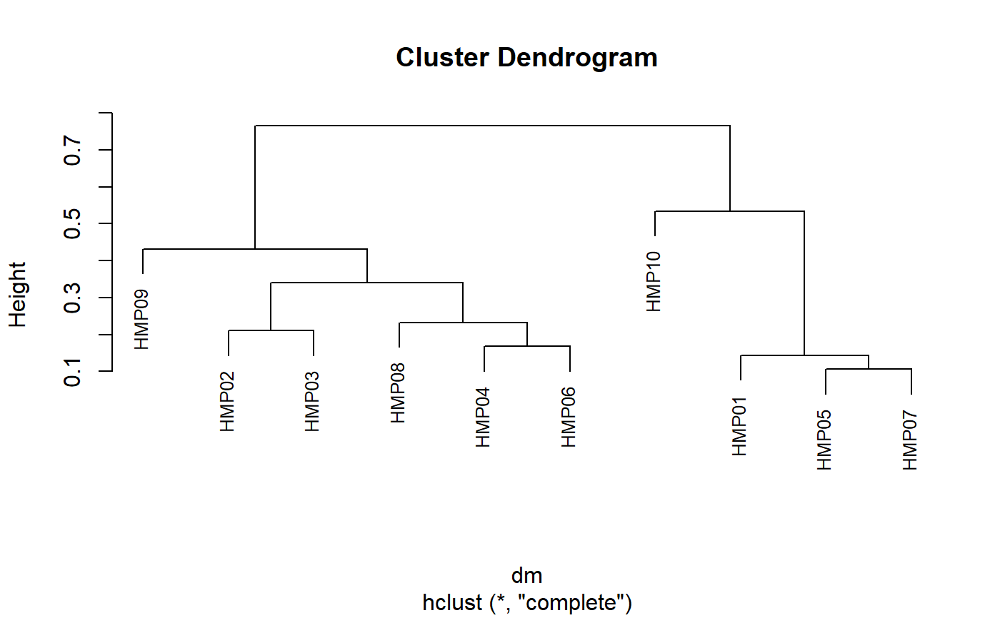

This is the function called internally by beta.div, but is made
visible here so you can use it with matrices and trees without having to
first convert them to BIOM objects.
unifrac(biom, weighted = TRUE, tree = NULL)
| biom | A |
|---|---|
| weighted | Use weighted UniFrac, which takes abundance into account rather than simply presence/absence. |
| tree | A |
A distance matrix of class dist.
library(rbiom) infile <- system.file("extdata", "hmp50.bz2", package = "rbiom") biom <- read.biom(infile) biom <- select(biom, 1:10) dm <- unifrac(biom) plot(hclust(dm), cex=.8)#> HMP01 HMP02 HMP03 HMP04 #> HMP01 0.0000000 0.1950253 0.3687298 0.4239831 #> HMP02 0.1950253 0.0000000 0.2101679 0.3187533 #> HMP03 0.3687298 0.2101679 0.0000000 0.3040937 #> HMP04 0.4239831 0.3187533 0.3040937 0.0000000# Using a custom matrix and tree mtx <- matrix(sample.int(12*20), ncol=20) dimnames(mtx) <- list(LETTERS[1:12], letters[1:20]) tree <- ape::as.phylo(hclust(dist(mtx))) dm <- unifrac(mtx, tree=tree) as.matrix(dm)[1:4,1:4]#> a b c d #> a 0.0000 148.9849 190.9240 187.6669 #> b 148.9849 0.0000 213.4126 134.2024 #> c 190.9240 213.4126 0.0000 171.8943 #> d 187.6669 134.2024 171.8943 0.0000